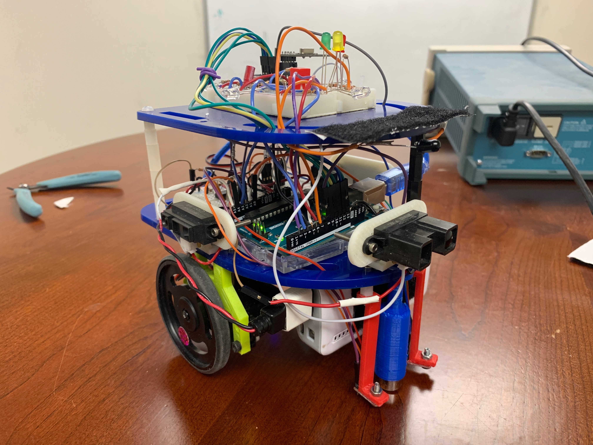

Lab 4 & Milestone 4: RF Communication and Full Robot Integration
Objectives
This is documentation is the combination of lab 4 and milestone 4. We want to be able to update the base station Arduino and draw out the maze on the monitor using FPGA. Additionally, we want to do the robot integration for the final competition.
Materials Used:
- 2 Arduino Uno
- 2 Nordic nRF24L01+ transceivers
- 2 radio breakout boards with headers
- Other sensors and parts from previous labs and milestones
RF Communication and Data Scheme
1. In order to map out the map successfully, we need a base station Arduino to communicate with the Arduino on the robot to correctly map out the maze. We use the Nordic nRF24L01+ transceivers for RF communication between the two Arduinos. We need the robot’s x and y coordinates and the wall information. Since the maze is 9 by 9, we need 4 bits each for the x and y coordinates of the robots. We use 4 bits for wall information also, which correspond to the north, south, east, and west wall. 1 indicates that there is a wall and 0 indicates that there is no wall. The code below shows how we encode the data.

2. There is example code given for the RF communication. In order to get the RF communication working, we need to change the channels in which the two transceivers communicate. We need to find channels that are not used by other teams to minimize noise and interference. Using the equation posted on Canvas, we decided to use channel 19 and 20 for communication. We then modified the code in order to send the desired maze information that we need to map out the maze. In order to send data to the FPGA for displaying the maze on the monitor, we created an extra bit called new_data to indicate whether there was new data coming in. We had a variable called got_data on the base station Arduino. We checked the got_data with the prev_data, which was the previous value of got_data. If they were different, we would set new_data to high indicating for 20ms indicating that there were new data coming in. We then set new_data low so that the FPGA would not constantly updating even when there was no new data coming in.
Base Station

Above is a diagram of the overall system of the base station. The base station RF receives data on the robot’s current position, and wall information. That data is output from the arduino and input into the GPIO of the FPGA through a voltage divider so the signal drops from 5V to 3.3V. Inside the FPGA, there are three modules: Image processor, M9K RAM, and the VGA Driver. Image Processor is what we’ve primarily worked on, while the M9K RAM and VGA driver were given to us. Image processor takes the data of the current position of the robot and the wall information and sends the write address and pixel color data to the M9K RAM. The RAM then stores this information in memory and outputs that data to VGA driver which translates the data to be correctly displayed on the monitor through the VGA connector.
Image Processor
1. The requirements for image processor is to input the data from arduino and output x_addr and y_addr (these are the x and y coordinates on the screen for each pixel, not the position of the robot) that is used for calculating the write address for M9K RAM, the result which contains the color information for the pixel at that x and y address on the monitor, and the W_EN signal that indicates when the M9K ram writes.
2. We decided the arduino_in signal to be total of 13 bits which consists of 4 bits of x position of the robot, 4 bits of y position of the robot, 4 bits for either wall is there or not (north, south, east, west), and one bit for the arduino to let the FPGA know when there is new data available.
3. Our image processor has one big always loop that contains all code. This always block is executed at every clock, and while new data is high, using the wall information, it assigns colors to a temporary array called tile. This tile is reused for all the robot positions, and represents a single intersection, which gets displayed in 30 by 30 tile on the screen. When the tile is finished getting assigned colors, the update bit is set to high. While this update bit is high, x_addr, y_addr, result, and W_EN are set for output. When the entire tile gets written to its appropriate address, all the local variables get reset as well as the tile and the update bit. Notice that if new_data is still high at this point, the program will return to the tile color assignment code and repeat the entire process until new_data is low. Below is the overall structure for easier understanding.
Full Robot Integration
Override Button
1. We implemented a working override button that would start the robot in case the robot did not detect the 950Hz note. Hardware wise, the pushbutton was placed on a breadboard with a wire connected to a digital pin. The digital pin read the ground signal (0) whenever the button was not pressed. When the button was pressed, the signal ran high and the robot would start. We implemented the override button inside the FFT function. We put the override button code in a while loop condition so that the robot will not start unless it hears the desired frequency or the push button is pressed.

Wall Sensors
1. Our wall sensors worked consistently, and the robot correctly sent the wall information of the walls in the maze at each intersection. We needed to calibrate the wall sensors by placing the robot at an intersection (the robot only checked for walls when it sensed that it was at a possible turning point) and reading the analog values of each sensor. By doing this, we were able to find the suitable threshold values for wall detection. If the sensor read a value below this threshold, that meant that there was a wall that needed to be avoided. Having reliable wall sensors was essential because this information was crucial for both DFS traversing and mapping. The wall information affected the search algorithm greatly because it affected the robot’s ability to assess possible paths and open nodes. Additionally, FPGA needed accurate wall information for display. Therefore, the wall information had to be sensed, processed, and packaged out via radio in a reliable fashion.
DFS Algorithm
1. Our wall sensors worked consistently, and the robot correctly sent the wall information of the walls in the maze at each intersection. We needed to calibrate the wall sensors by placing the robot at an intersection (the robot only checked for walls when it sensed that it was at a possible turning point) and reading the analog values of each sensor. By doing this, we were able to find the suitable threshold values for wall detection. If the sensor read a value below this threshold, that meant that there was a wall that needed to be avoided. Having reliable wall sensors was essential because this information was crucial for both DFS traversing and mapping. The wall information affected the search algorithm greatly because it affected the robot’s ability to assess possible paths and open nodes. Additionally, FPGA needed accurate wall information for display. Therefore, the wall information had to be sensed, processed, and packaged out via radio in a reliable fashion.
2. We initially implemented DFS by storing the walls at each node and whether a node was visited or not in 2 separate 2-dimensional arrays. We also had separate stacks for backtrack and a global turn sequence to get back to the start node. This was very inefficient in terms of space, and it also ended up making things more complex, since we had all of these different moving components. The stacks we used were not a part of the Arduino Stack library, but were rather arrays with a global variable storing the index of the current element.
3. Because this whole system was very buggy and complicated, we moved to a far simpler and more effective implementation.
4. Our final DFS system had one 2-dimensional array of bytes, which contained the previous global direction that a node was entered (NSEW) and the cumulative directions that a node was entered at any point in the past. For example if we entered a node facing North, we would set the 4 leftmost bits and the 4 rightmost bits of the byte at the node to North, which was represented by 0001 -- this was 00010001 at that node. Then, let’s say after more exploration we returned to this same node facing West. We would override the 4 leftmost bits to West (1000) and combine the rightmost bits (1001) to make 10001001 (Note: storing cumulative previous directions was an attempt to optimize backtrack, which if we had more time we would have implemented to potentially cut down the number of nodes it needs to touch to actually backtrack). This allowed for us to get rid of the stack completely, which was very inconsistent in our implementation prior to this system.
5. When we reach a dead end (a node surrounded by walls or visited nodes), we set the inBacktrack global variable to true and enter backtrack mode. When in backtrack mode, at a particular node, the robot would read the previous direction of entry and go in the opposite direction. So if the robot entered a node facing the West and backtracks to the node facing South, it would turn left to go back the way it came. Also, when in backtrack mode, it does not override the previous direction of entry, so that when backtracking later, it will never go down a deadend or fully explored path again.
6. Our robot was done if there were no more available nodes left, which was represented by 255 (11111111) in unvisited, but accessible nodes. The robot would reach a node, and if the nodes in front, to the left, and/or to the right were not visited (if the node is still 0), and there were no walls blocking them, then it would set those nodes to 255. If there are no more nodes with 255, then we are done. The green light was set to HIGH, and the robot will backtrack to the starting point.
Robot Avoidacne
1. For robot avoidance, we had to consider multiple cases of when a robot could be seen. The simplest case is when we are exploring new nodes with DFS and we see a robot in front of us. Because the state of the robot in DFS is very essential to its exploration, we decided to initially just turn 360 degrees and check again if the robot was there. If the other robot detected us and went away, or if it just explored a different path, we would continue on our current path as if we hadn’t seen the robot. However, if we did the 360 turning and the robot was still there, we designed a system where the robot would enter “robotBacktrack”, which would backtrack until it found an open path and go down the next path. Ideally it would only go back 1 or 2 nodes. The reason why we had a separate backtrack is because we needed to set the node back to available, so that the robot would return to that path and finish exploring. Otherwise, that path would never be explored again.
2. The other case was if we see a robot in backtrack. This is a dangerous case because we do not want to turn around and go back to the dead end. We also would not want to reset the nodes to unvisited because we do not want to return to this already-explored path.
3. Unfortunately there were bugs with the robotBacktrack and due to time constraints, we decided to keep the 360 turn, but then just go back to the previous node and try to go down a different path. If there were no different paths that were able to be explored, our robot would just have to keep turning around and going back to the previous node until the other robot moved. However, we did not anticipate that this case would occur, and it did not occur during the competition. This also helped prioritize the importance of not re-exploring nodes, and not losing track of where the robot was.
The video below shows our robot avoiding other robot in the maze.
Final Robot Design
The pictures below show the final design of our robot, Clyde, and its cost list.
Conclusion
After the final integration, Clyde, our robot was able to successfully traversed the maze using the DFS algorithm and map out the maze. The video below showed Clyde traversing a 9 by 9 maze and sending data to the base station Arduino to display on the monitor. The picture below shows the actual maze and the final display on the monitor.